The Model Context Protocol (MCP) system provides a standardized interface for managing external tools and integrating them with AI agents. It handles tool discovery, execution, and lifecycle management, enabling agents to dynamically access and use external functions through a unified protocol.
For information about tool integration patterns and best practices, see page 5.2. For details about agent tool execution, see page 2.1.
The MCP system follows a layered architecture that separates tool definition, connection management, and execution logic.

The IMCP interface defines the core protocol for tool management:
| Method | Purpose | Parameters | Returns |
|---|---|---|---|
listTools |
Get available tools for client | clientId: string |
Promise<IMCPTool[]> |
hasTool |
Check if tool exists | toolName: string, clientId: string |
Promise<boolean> |
callTool |
Execute a tool | toolName: string, dto: IMCPToolCallDto |
Promise<MCPToolOutput> |
updateToolsForAll |
Refresh all tool caches | None | Promise<void> |
updateToolsForClient |
Refresh client tool cache | clientId: string |
Promise<void> |
Tools are defined using the IMCPTool interface, which specifies the tool's name, description, and input schema:
interface IMCPTool {
name: string;
description?: string;
inputSchema: {
type: "object";
properties?: MCPToolProperties;
required?: string[];
};
}
The MCPToolProperties type defines parameter schemas with validation rules including type constraints, enums, and descriptions.
Tool execution uses the IMCPToolCallDto interface to pass execution context:
| Field | Type | Purpose |
|---|---|---|
toolId |
string |
Unique tool execution identifier |
clientId |
string |
Client session identifier |
agentName |
AgentName |
Executing agent name |
params |
MCPToolValue |
Tool input parameters |
toolCalls |
IToolCall[] |
Associated tool calls |
abortSignal |
TAbortSignal |
Cancellation signal |
isLast |
boolean |
Last tool in sequence flag |
The ClientMCP class provides the primary implementation of the MCP protocol with caching and lifecycle management.

The ClientMCP constructor initializes the MCP with parameters and triggers the onInit callback. Tools are fetched and cached using a memoized function keyed by client ID.
NoopMCP provides a no-operation implementation that returns empty results and throws errors on tool calls. It's used as a fallback when no MCP is configured.
MergeMCP combines multiple MCP instances, allowing tools from different sources to be accessed through a unified interface. It delegates operations to the appropriate MCP based on tool availability.
The MCPConnectionService manages MCP instances using memoization to ensure one instance per MCP name:
public getMCP = memoize(
([mcpName]) => `${mcpName}`,
(mcpName: MCPName) => {
const schema = this.mcpSchemaService.get(mcpName);
return new ClientMCP({
mcpName,
bus: this.busService,
logger: this.loggerService,
...schema,
});
}
);
The MCPPublicService provides a context-aware public API that wraps MCP operations with method context tracking:
| Method | Purpose | Context Parameters |
|---|---|---|
listTools |
List tools with context | methodName, clientId, mcpName |
updateToolsForAll |
Update all tools | methodName, mcpName |
updateToolsForClient |
Update client tools | methodName, clientId, mcpName |
hasTool |
Check tool existence | methodName, clientId, mcpName, toolName |
callTool |
Execute tool | methodName, clientId, mcpName, toolName, dto |

When a tool returns a string output, it's automatically committed to the agent using commitToolOutput. If the tool call is marked as the last in a sequence (dto.isLast), the agent execution continues. Error handling stops tool execution and flushes the agent buffer.
MCPs are defined using the IMCPSchema interface which specifies the tool listing and calling functions:
interface IMCPSchema {
mcpName: MCPName;
docDescription?: string;
listTools: (clientId: string) => Promise<IMCPTool<unknown>[]>;
callTool: <T extends MCPToolValue = MCPToolValue>(
toolName: string,
dto: IMCPToolCallDto<T>
) => Promise<MCPToolOutput>;
callbacks?: Partial<IMCPCallbacks>;
}
The IMCPCallbacks interface provides hooks for MCP lifecycle events:
| Callback | Trigger | Parameters |
|---|---|---|
onInit |
MCP initialization | None |
onDispose |
Client resource cleanup | clientId |
onFetch |
Tool fetching | clientId |
onList |
Tool listing | clientId |
onCall |
Tool execution | toolName, dto |
onUpdate |
Tool cache update | mcpName, clientId? |
The MCPUtils class provides high-level utility functions for MCP management:
export class MCPUtils {
public async update(mcpName: MCPName, clientId?: string) {
swarm.mcpValidationService.validate(mcpName, METHOD_NAME_UPDATE);
if (clientId) {
return await swarm.mcpPublicService.updateToolsForClient(
METHOD_NAME_UPDATE, clientId, mcpName
);
}
return await swarm.mcpPublicService.updateToolsForAll(
METHOD_NAME_UPDATE, mcpName
);
}
}
The singleton MCP instance provides a convenient interface for updating MCP tool caches.
MCPs integrate with the broader agent system through the dependency injection container and method context system. The MethodContextService provides execution context that includes MCP name, client ID, and agent name for proper tool routing and execution tracking.